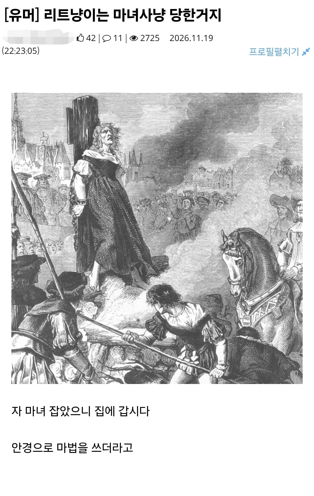

진짜 마녀가 맞았다는거임;;
안경으로 마법쓰다가 걸릴 줄이야

진짜 마녀가 맞았다는거임;;
안경으로 마법쓰다가 걸릴 줄이야
ㅋㅋㅋㅋㅋㅋㅋㅋㅋㅋㅋㅋㅋㅋㅋㅋ 시발 이거네
마남의 수정구!
매지컬냥이
https://youtu.be/aKsSlOD774Y?si=f4JSxGpsYYKLR_ak
핵쟁이 out
마녀로 의심 받으니까 갑자기 지 혼자 십자가에 스스로 매달리더니 불까지 지름 ㅋㅋㅋㅋㅋ
십자가에 혼자 자살한 미친인간 실제로 있었잖아 한국에
그거 나무위키 가끔보는데 너무 기괴해
아니 본인이 불에 안 죽는다고 불구덩이에 들어가더니 죽어버림
https://www.dogdrip.net/735724139
이런거 쓰시면 감정이입을 못해 안달난 얘네들이 슬퍼해요. 우리 우진이 밥잘사주는 좋은 형이었는데 흑흑
밥잘사주는 잘자마녀
ㅅㅂ 돌 좀 던질려니깐 저승으로 튀네 ㅋㅋ
마녀새끼 하나 잘 뒤졌다
공열안자경!
아니 어떻게 알았지!
초소형 마법을 쓰더라니깐! 정말이라구!!
와 시발 이게 뜨네
아무도 죽으라고 등떠밀지 않았음
지 혼자 쫄려서 죽은거지
아니 잡아다가 절차따라서 재판 열려는데 그놈이 갑자기 마을 광장에서 지 몸에 불을 지르더라니깐?